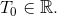

Funcții periodice
Definiția FE9: Funcție periodică
Funcția  se numește periodică dacă există (adică
se numește periodică dacă există (adică  este un număr strict pozitiv), astfel încât să avem următoarea egalitate:
este un număr strict pozitiv), astfel încât să avem următoarea egalitate:
oricare ar fi
Termenul se numește perioadă.
Exemple:
Funcția de acoperire universală:
Avem  cu
cu  aparținând cercului trigonometric.
aparținând cercului trigonometric.
Pentru avem funcția periodică oricare ar fi
Pentru avem funcția periodică oricare ar fi
Definiția FE10: Perioada principală
Cel mai mic număr pozitiv , care verifică relația (1) se numește perioada principală a funcției 
Notăm această perioadă principală cu 
Atunci, avem că oricare ar fi și
Exercițiu rezolvat:
Fie funcția (adică ultima cifră a numărului ).
Este această funcție o funcție periodică? Dacă da, să se arate și să se precizeze perioada principală.
Rezolvare:
Dând valori lui  , obținem:
, obținem:
ș.a.m.d.
Se observă că funcția dată se repetă din  în .
în .
Astfel, avem că:
Ne rezultă că oricare ar fi și